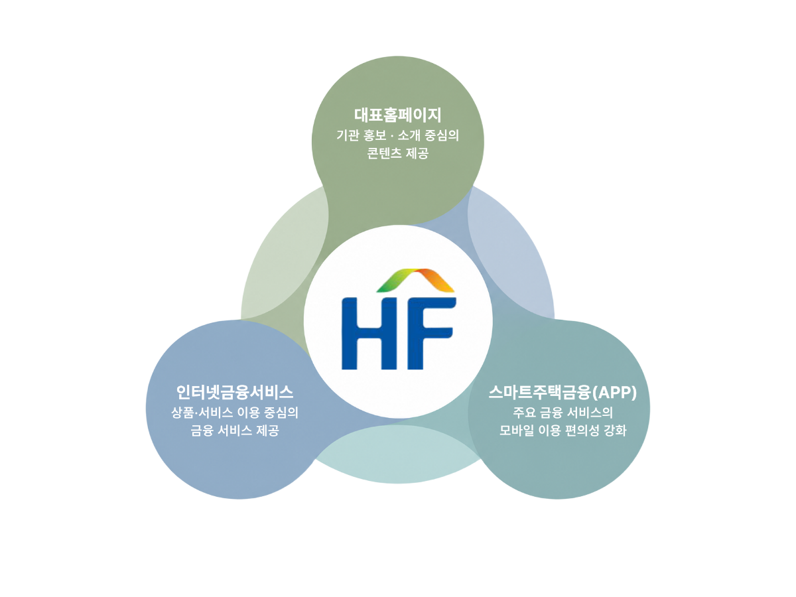
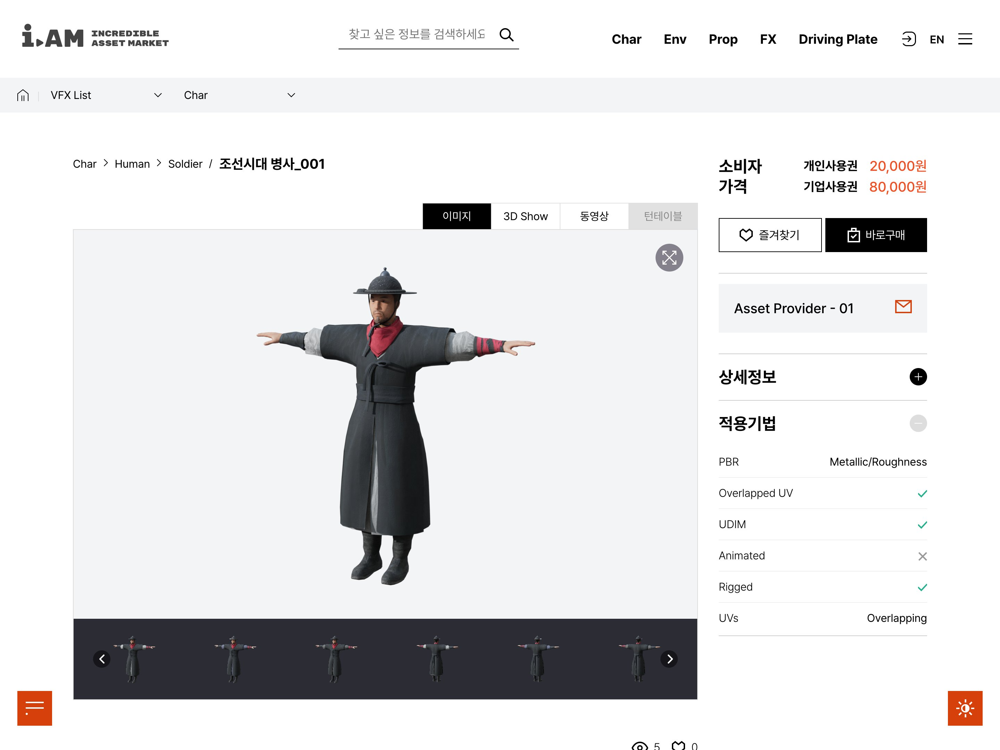
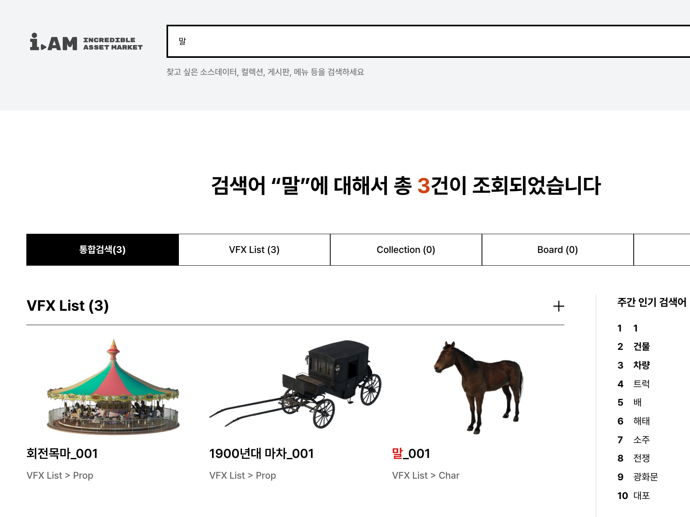
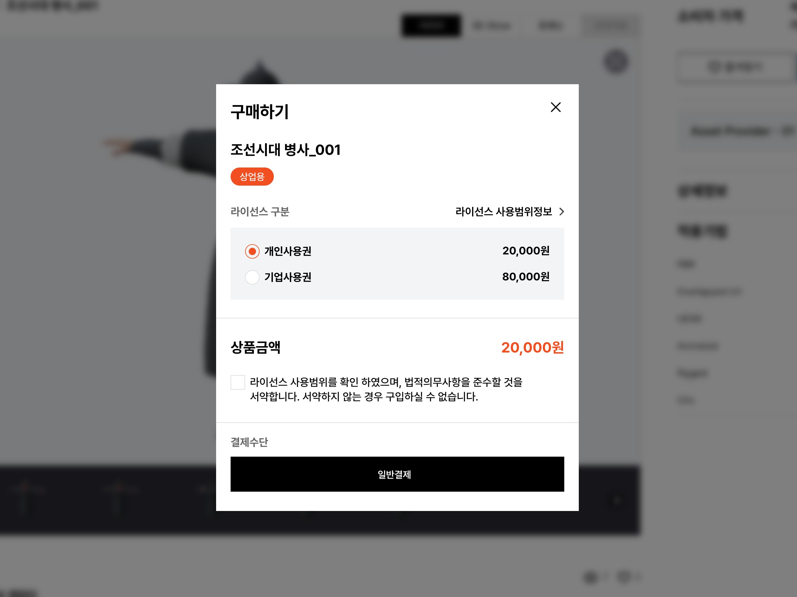

한국주택금융공사비대면채널 UI/UX 고도화
주택금융 4개 서비스의 화면을 설계하고 상품 탐색 경로를 통합했습니다.

업무가 복잡한 서비스일수록 사용자는 화면 앞에서 멈춥니다.
저는 그 복잡한 절차를 사용자가 헤매지 않고 따라올 수 있는 흐름으로 바꾸고,
오픈한 뒤에도 그 흐름이 지켜지도록 운영까지 이어갑니다.

요구사항을 읽어내는
공공·금융·교육 등 여러 분야의 제안서를 작성하며 쌓은 분석력으로
낯선 분야의 요구사항을 빠르게 파악하고 구조로 정리합니다.
복잡함을 화면으로 옮기는
다양한 분야의 경험과 KRDS 전문성으로 복잡한 기능과 프로세스를
일반 사용자가 쉽게 이해할 수 있는 화면으로 옮깁니다.
제안부터 운영까지 이어온
설계뿐 아니라 제안·QA·감리·오픈 후 운영까지, 다양한 이해관계자와 협업하며 기획을 실제 서비스로 완성해왔습니다.
복잡한 기능과 프로세스를
사용자 화면으로 번역하는
서비스 기획자 조가인입니다.
Cho Ga In
1995.07.19 (만 31세)
aqwer77@naver.com
010 7579 9507
서비스 기획 / UI·UX 설계
제안 / QA / 운영
주택금융 4개 서비스의 화면을 설계하고 상품 탐색 경로를 통합했습니다.
오픈 이후 운영을 담당하며 신규 기능을 설계하고, 기록관 데이터 이관을 지원했습니다.

기관·개인·전문가로 나뉜 회원 체계를 표준화하고 FO/BO 전체 화면을 설계했습니다.

* 보안상 실제 화면을 공개할 수 없어 AI로 생성한 이미지로 대체했습니다.
Background
한국주택금융공사의 비대면 채널을 사용자 중심으로 개선하는 고도화 사업입니다. 주택보증·주택연금·상품찾기·모바일 대출에 걸친 여러 서비스를 대상으로, 흩어진 상품 정보와 복잡한 신청 절차를 사용자가 쉽게 따라올 수 있는 구조로 다시 설계했습니다.
Problem
채널 별 역할 구분 미흡
채널 별 역할과 제공 정보의 구분이 불명확하여 고객의 정보 탐색 및 서비스 이용 과정에서 혼란 발생
주요 기능 분산
주요 기능(신청·조회·발급·관리)이 분산되어 사용자가 서비스 진행 과정과 처리 현황을 한눈에 파악하기 어려움
복잡한 신청 프로세스
7단계 이상의 신청 절차와 반복 입력, 수정이 어려운 UI로 사용자의 신청 부담 및 중도 이탈 증가
모바일 최적화 미흡
PC 중심의 UI/UX로 모바일 환경에서의 서비스 이용 편의성 저하
Key Design
채널 별 특성과 주요 이용 목적을 고려해 IA를 설계하고, 각 채널의 역할에 적합한 신규 서비스를 구성하여 서비스 접근성과 이용 편의성을 높였습니다.

실무자 인터뷰·MAZE·VOC 등 다양한 고객 분석을 근거로 주요 이용 목적과 이용 패턴을 파악하고, 핵심 서비스 접근성을 높여 사용자에게 필요한 정보를 중심으로 효율적인 화면 경험을 제공했습니다.
타 금융사의 신청 과정을 비교·분석하여 신청 단계별 정보와 입력 항목을 중심으로 개선사항을 도출하고, 사용자가 신청 흐름을 쉽게 이해할 수 있도록 직관적인 화면 구조와 UI/UX를 설계했습니다. 특히 KRDS의 단계표시기, 텍스트·날짜 입력 필드, 파일업로드 등 검증된 컴포넌트와 동의·입력 폼 기본 패턴을 적용해 완성도와 일관성을 높였습니다.
일부 단계 안에 하위 단계가 섞여 있어
진행 상황을 파악하기 어려움
화면 안에 흩어져 있던 하위 단계를 하나로 통합하고, 현재 위치를 명확히 보여주는 단계 표시기를 적용했습니다.
KRDS 적용 컴포넌트
KRDS 컴포넌트 > 피드백·입력, 기본 패턴 > 동의·입력 폼
모바일 환경에서의 이용 편의성을 고려해 주요 UI 패턴을 적용하고, 타 금융기관 벤치마킹을 통해 바텀시트·풀팝업·캘린더 UI 등을 활용하여 모바일 특성에 맞는 화면과 인터랙션을 설계했습니다.
바텀시트
풀팝업
캘린더
Review
타 금융사와 신청 절차를 비교해 불필요한 입력 항목과 자동화 요소를 제안했지만, 금융 규제상 제약으로 더 과감하게 개선하지 못한 점이 아쉬웠습니다.
복잡한 프로세스와 금융 상품을 구조적으로 이해하는 방법, 그리고 모바일에 적합한 다양한 UI/UX 요소를 배웠습니다.
HF는 이용층이 2030부터 고령층까지 넓은데, 고령층을 위한 쉬운 모드·도움말을 충분히 다루지 못했습니다. 다시 한다면 고객층 분석을 바탕으로 접근성 높은 방향을 제안하고 싶습니다.
Background
새 정부 출범에 맞춰 대통령의 국정 활동을 국민에게 알리고 소통하기 위한 임시홈페이지 구축 프로젝트입니다. 짧은 기간 안에 오픈부터 실시간 운영, 데이터 이관, 신규 기능 설계까지 담당했습니다.
Task
신속한 국민 소통 창구 구축
새 정부 출범에 맞춰 대통령의 국정 활동을 알리고 국민과 소통할 홈페이지의 조기 오픈 필요
안정적인 운영 체계 마련
실시간 콘텐츠 업로드, 담당 비서관 커뮤니케이션, 모니터링 기반 오류 수정 등 오픈 이후 원활한 운영을 위한 업무 지원 필요
신규 기능 설계
운영 과정에서 새롭게 요구되는 게시판·기능의 지속적인 설계 및 반영
Work
새 정부 출범 일정에 맞춰 화면 설계부터 오픈까지 빠르게 진행했고, 테스트 과정을 거쳐 안정적으로 홈페이지를 공개했습니다.
실시간으로 콘텐츠를 업로드하고, 이전 대통령실 홈페이지의 데이터 이관을 지원했습니다. 미디어·환경·구축·보안 등 다양한 담당자와 직접 회의에 참여해 커뮤니케이션하고, 사이트를 모니터링하며 안정적인 운영을 이어갔습니다.
대통령 굿즈 게시판과 슬라이드 기능, 숏폼 콘텐츠의 필요성을 제안하고 화면을 미리 설계했으며, 굿즈 다운로드 테스트 등 실제 반영을 위한 검증을 진행했습니다.
Review
빠르게 오픈해야 하는 임시홈페이지였던 만큼, 사용자 경험을 깊이 있게 설계하기보다 신속한 오픈과 안정적 운영에 집중할 수밖에 없었던 점이 아쉬웠습니다.
미디어·환경·구축·보안 등 다양한 담당자와 협업하며, 여러 이해관계자의 요구를 조율하고 운영 상황에 맞춰 유연하게 대응하는 방법을 배웠습니다.
다시 한다면 임시홈페이지라도 초기 설계 단계에서 사용자 관점을 함께 고려해, 빠른 오픈과 사용성을 모두 잡는 방향으로 접근하고 싶습니다.
Background
영상 소스데이터를 관련 업계가 온라인으로 공유·거래할 수 있는 플랫폼(FO)과 관리시스템(CMS/BO)을 새롭게 구축한 프로젝트입니다. 사용자단·관리자단·영문 다국어를 대상으로, IA 설계부터 화면정의서, 테스트, 감리 대응까지 기획 전 공정을 수행했습니다.
Task
전문 데이터의 구조화
파일 사이즈·Tris·Color Space 등 소스데이터 특유의 전문 메타데이터를 사용자가 이해하기 쉬운 등록·탐색 구조로 정리 필요
탐색 중심의 플랫폼 설계
방대한 소스데이터 중 원하는 것을 쉽게 찾을 수 있는 썸네일 중심의 탐색 구조와 검색 체계 설계 필요
거래 기반의 회원·구매 체계 구축
실제 거래가 이루어지는 플랫폼인 만큼, 회원 체계부터 결제까지 신뢰할 수 있는 구매 흐름 구축 필요
Key Design
파일 사이즈·Tris·Color Space 등 소스데이터 특유의 메타데이터를 파악하고 개발자와 협의해 등록 항목을 도출했으며, 대·소분류 폴더 구조로 체계화했습니다.

해외 플랫폼을 벤치마킹해 썸네일 중심의 탐색 구조와 컬렉션·카테고리·태그를 구성하고, 유사 데이터(Similar Data) 추천과 콘텐츠 전반을 아우르는 통합검색을 설계해 탐색 경험을 높였습니다.

일반·기업 회원을 구분하고 PASS 본인인증·SNS 로그인 분기를 설계했으며, PG 결제 모듈 연동을 고려한 구매 화면과 관심 데이터·거래 내역을 관리하는 마이페이지까지 구축했습니다.

통합·단위 테스트 케이스(국문·영문)를 직접 작성해 검증하고, 웹 접근성·오류 관련 감리 지적사항에 대한 소명을 작성·대응했습니다.
Review
입사 직후 첫 프로젝트로 전 공정을 수행하다 보니, 각 화면을 더 깊이 있게 다듬기보다 방대한 산출물을 기한 내 완성하는 데 집중할 수밖에 없었던 점이 아쉬웠습니다.
소스데이터라는 낯선 전문 영역을 빠르게 파악해 구조화하는 방법을 익혔고, IA부터 화면정의서·테스트·감리 대응까지 기획의 전 공정을 경험하며 서비스를 끝까지 완성하는 감각을 배웠습니다.
다시 한다면 방대한 화면을 설계하며 쌓인 기준을 바탕으로, 초기에 설계 원칙을 더 촘촘히 세워 일관성과 효율을 함께 높이고 싶습니다.